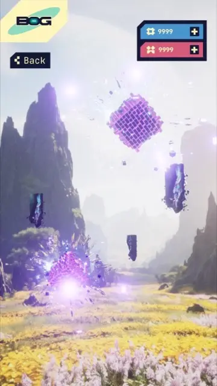

A world where
duels settle disputes.
Inside BOG: the collectible figures, tactical choices and Resolver career behind Thrylox’s first game.
See BOG in play.
The early mobile demo brings together tactical duels, a collection of figures and Anomalies: encounters played against the game rather than another player.
The footage shows that playable foundation. The wider Resolver career, progression and other planned systems are described below.
Get iOS Demo AccessThe video could not load. You can still explore the real demo screens in the BOG story.
See the demo screensAbout this gameplay video
The video shows BOG’s early mobile demo. The BOG article explains its duels, collection and Anomalies, alongside the wider game planned for production.
Settling disputes is your profession.
In BOG, you play a Resolver: a specialist who takes on cases and settles disputes through duels. Your collection is the tool of your trade. Each case gives the fight a purpose beyond simply winning a match.
The setting places familiar human disagreements inside a science-fiction world. The longer-term plan is to build a career around those encounters, with more consequential cases and new places to explore.
A ship between cases.
The ship is the hub of the current demo. Choose a destination on the map and the view outside its window changes. Between encounters, it gives you somewhere to return to.
The plan is to make that ship more personal through customisation, as the Resolver career expands beyond the demo.
 This demo image is unavailable.
This demo image is unavailable.The duel starts before the fight.
First comes an open draft: both players choose and ban figure types. Then each prepares an actual line-up in secret, choosing figures from their collection and deciding their order.
Once both line-ups are committed, the fight resolves automatically. The decisions have already been made: what to counter, where to commit your strength, and which combination might change the result.
 This demo image is unavailable.
This demo image is unavailable.Five positions. One shared budget.
The current PvP rules give a line-up 12 Danger Points across five positions. Spending more on one figure leaves less for the others.
A stronger figure can be valuable. So can the points you save for a different matchup. The question is not simply which figure is strongest, but where that strength will matter.
One result can change the next.
Princess makes the next figure inherit her result. If she wins, it wins too. If she loses, it loses.
That makes order matter. A low-Danger figure can take a win against a much stronger opponent because of the combination that comes before it. The individual figure is only part of the decision.
More figures. More ways to answer.
The draft selects types; your collection gives you choices within them. You are not bringing the same fixed team into every duel.
Those figures also form the collection you use in Anomalies. The aim is for collecting and composing to remain connected: a new figure is another option to think with, not just another object to own.
 This demo image is unavailable.
This demo image is unavailable.The same figures. A different challenge.
Anomalies are BOG’s runs against the game. The current demo takes a collection through five encounters, with a choice of three upgrades after a fight.
Figures accumulate fatigue along the way. An upgrade that helps now may also change the combinations available later, while a figure held in reserve can become useful in the next encounter. You are managing the run, not only the fight in front of you.

This demo image is unavailable.Cases beyond the game.
A planned case-submission feature would let people bring their own disagreements into BOG. A duel could then settle something beyond the match itself.
It gives people a reason to bring a case—and another person—into the game. This is part of the wider design, not a feature completed in the current demo.
Building the game—and the tools.
BOG is being built in Unreal Engine. Alongside it, the team is developing its own mobile scene technology and an in-house pipeline for taking collectible figures from concept to production.
AssetCsvSync is one example: a production tool connecting game data with Unreal assets. The aim is to give a compact team more room to create, with less repetitive production work to manage.
See AssetCsvSyncBeyond the current demo.
The next stage adds more locations, figures, quests and PvE content, alongside onboarding and progression. The store, battle pass, live operations and ship customisation are also planned production work.
That is the distinction between the game you can try today and the wider BOG experience the team is building towards.
Try the iOS demo.
Explore the duels, collection and Anomalies in the current build. Demo access is provided through TestFlight.
Get iOS Demo Access